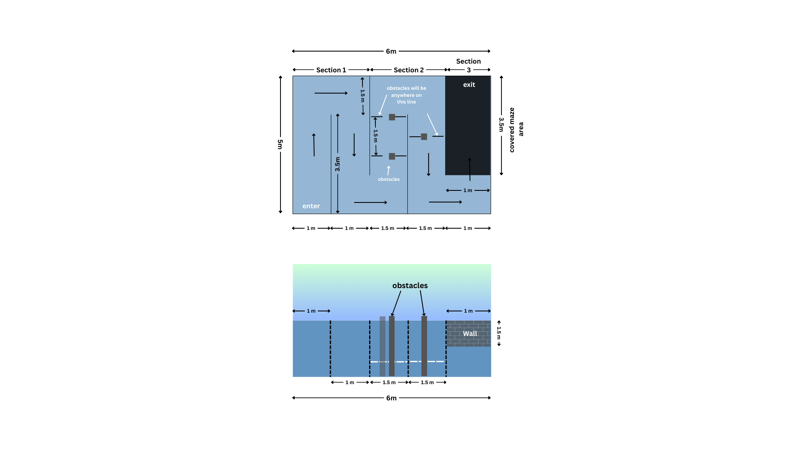

Table of Contents
- Objectives
- AMUROV Information and Updates
- Schedule
- Official AMUROV Competition Website
- Registration Information
- Competition Categories
- Team Deliverables (Design Documentation)
- Competition Overview (UG level)
- Competition Requisites (For UG level)
- Tether Cable Length
- Competition Rules
- The Arena
- Competition Tasks
- General Restriction
- Prizes
- Disqualification
- Others
Objectives
AMUROV is a national-level student competition established to generate, cultivate, and enhance a community of innovators capable of making substantive contributions to the Remotely Operated Underwater Vehicles (ROVs) domain.
Participants tackle fundamental challenges in the design of ocean systems capable of changing the world — while getting hands-on experience by designing, building and testing a remotely operated underwater vehicle. By providing a venue and mechanism to share knowledge and innovate, students are primed for jobs in developing, testing and managing state-of-the-art systems.
AMUROV Information and Updates
-
AMUROV Forum
All technical questions, comments, and suggestions should be posted on the 2024 AMUROV Forum. Teams are encouraged to actively participate in the online community and monitor it for the latest news and updates regarding all things.
-
Points of Contact
ORGANIZERS -
- MTS AUV-ZHCET, AMU : auvzhcet@zhcet.ac.in
- IEEE, AMU : ieeestudentbranch@zhcet.ac.in
Schedule
AMUROV 2024 will be hosted offline. All venue, tasks, vehicle guidelines and descriptions included in this document are meant to guide competition submissions and will be executed on 9 - 10 November, 2024.
Official AMUROV Competition Website
The official competition website is https://amurov.co.in/. The documents posted at AMUROVc website are the official documents for this competition. All documents referenced here and in other AMUROVc documents are available at the official competition website. These documents are updated regularly. It is the teams’ responsibility to check the website for the most recent revisions.
Competition Categories
- Undergraduate (UG) level: The undergraduate level competition will require the physical presence of the team including the 3prototype or the culminating hardware solution that the team has created.
Team Deliverables (Design Documentation)
Undergraduate Level(UG)
Structure of the Team
- Maximum 8 students can participate (including team head).
- A team mentor (who needs to be a faculty advisor/master's student).
- Students must be of the same school/college.
Video Submission
The maximum length of the video should not be more than 1 minute, in which the team should show at least 30 seconds of maneuvering inside a pool, demonstrated by one of their team members.
Technical Design Report (TDR)
The report should start by an introductory page containing the structure of the team and relevant information. Other important areas to mention but not limited to:
- Specifications of the ROV including: weight, dimensions etc.
- Technical details including: Battery and power consumption, buoyancy etc.
- Design CADs/ 3D drawings/ CFD Simulations/ MATLAB Simulink Simulations/ Circuit diagrams/ Pictures etc.
- Details of the sensors and software used.
- Procurement Report: It should contain the details of manufacturing cost, providing a clear overview of the budget plan.
- The report should be submitted in both pdf and word file format.
Competition Overview (UG level)
Venue
- UG Students - Yusuf Ali Aquatic Complex, Aligarh Muslim University, Aligarh.
Registration Fees
- UG Students - Rs. 5000 per team
Specifications of ROVs
Weight and size constraints
Competition officials will use the following chart to award points for size and weight:
L=LengthB=Breadth
H=Height
| SIZE ( in cms) | Weight ( In Air) | ||
|---|---|---|---|
| L<75, B<65.01, H<60.01 | +10 points | < 20 kg | +10 points |
| 75<L<100, 65.01<B<75.01, H<69.9 | + 5 points | 20.01 kg to 28 kg | + 5 points |
| L>100.01, B>75.01, H>69.9 | No points | 28.01 kg to 35 kg | No points |
Design, software and manufacturing
- The team shall be awarded 10 points on having the innovative and robust design of their ROV.
- The team shall be awarded 10 points on using self manufactured components in their ROV, that can be thrusters and Hull.
- The Team which will be using ROS for completing the tasks shall be awarded 10 points.
Power
India operates on 230V supply voltage and 50Hz frequency. In India there are three associated plug types, types C, D and M. Plug type C is the plug which has two round pins, plug type D is the plug which has three round pins in a triangular pattern and plug type M is the plug which also has three round pins
 |
 |
 |
|---|---|---|
| Type C | Type D | Type M |
There should also be proper use of fuses in the vehicle concerning the safety standards. In addition to it, there should also be an external kill switch to stop the working of the vehicle completely.
Length of tether should be decided by the teams themselves after going through the dimensions of the pool and the different task descriptions. Around 50m would be sufficient.
Safety
- ROVs must be designed and manufactured as to pose no danger of any kind to anyone or anything at the venue.
- ROVs must not leak and pollute the pool.
- Pressure of any compressed gas used must not exceed 6 bars.
- The use of explosives, fire or hazardous chemicals is prohibited. Certified lithium batteries are allowed.
- If lasers are used, they must be of class 2 or lower. Care must be taken to protect all persons at the venue from harm. Beams must be oriented in such a fashion that they cannot shine into the eyes of the spectators.
Balloons
- Balloons of radius 10cm will be used in Task-2
Competition Requisites (Applicable for UG Level only)
All the participating teams are imperatively required to bring their own tether cables for the completion of the appropriate tasks.
Tether Cable Length
The specified length of the tether cable to successfully complete each task is 50 meters.
Competition Rules (UG level)
Rules :
- The official source for all information concerning rules, interpretations, and information updates for AMUROV is at : https://amurov.co.in/
- Only the registered students of each team are eligible for the cash awards.
- Participants must be enrolled at their colleges/schools as a full-time student during winter and spring to be considered “students.”
- One student cannot be a part of multiple teams.
The Arena
Competition Tasks
Technical Presentation
Purpose
The Technical Presentation segment is designed to evaluate the team's ability to effectively communicate their design process, technical choices, and innovative solutions to a panel of judges. This section aims to showcase the depth of understanding and creativity in addressing the challenge objectives.
Presentation Structure
Teams are required to prepare a comprehensive presentation that covers the following aspects:
-
Introduction:
- Overview of the project and mission objectives.
- Team introduction and role allocation.
-
Design Process
- Explanation of the conceptualization and design phase.
- Discussion of the key design choices and their rationale.
- Innovation and Creativity: Novelty and originality of the design solutions.
-
Subsystems Overview
- Detailed breakdown of each subsystem (e.g., mechanical, biological, autonomous,electronics, power & communication).
- Highlight the innovations and unique features of each subsystem.
-
Technical Challenges and Solutions
- Identify the primary technical challenges encountered.
- Describe the solutions implemented to overcome these challenges.
Presentation Format
- Duration: Each team will have a maximum of 15 minutes for their presentation, followed by a 5-minute Q&A session with the judges.
- Aids: Use slides, videos, and diagrams to enhance the presentation. Ensure that all visual content is clearly labeled and annotated.
- Clarity and Engagement: The presentation should be clear, concise, and engaging, with a focus on effective communication of technical details.
Evaluation Criteria
- Content Quality: Depth of technical knowledge and understanding of the project.
- Clarity and Organization: Logical flow and coherence of the presentation.
- Engagement and Communication: Ability to engage the audience and effectively communicate complex ideas.
- Response to Questions: Competence and thoroughness in addressing judges' questions.
Submission Requirements
- Teams must submit their presentation slides at least 24 hours before the scheduled presentation time.
- Any additional materials or demonstrations should be pre-approved by the competition organizers.
Task 1 : Qualification Round
The primary objective of this qualification task is to evaluate the control of each team's vehicle. The task requires teams to navigate their Remotely Operated Vehicle (ROV) through a submerged gate. Teams must guide their ROV through the submerged gate without making contact with it. This task assesses the precision and stability of the vehicle's movement in a controlled aquatic environment. Each team will be given a specific time frame to complete the task, highlighting the efficiency and speed of their vehicle's navigation capabilities.
Fig. 1.1 Top View
Task Specification
- Time Limit: Each team has a maximum of 5 minutes to complete the task.
- Gate Dimensions: The gate is 1 meter wide, constructed entirely from PVC, and fully submerged underwater.
Points
- The total points to be awarded to a team for this task is 50.
- If the team completes the maneuvering round, it will be granted the whole of the 50 points.
- However, 5 points will be deducted every time the ROV touches the maze periphery.
Props specification
The gate is made of Poly Vinyl Chloride (PVC) and is designed to remain submerged at a fixed depth within the pool. There are no additional obstacles or structures near the gate, providing a clear path for navigation.
Task 2 : Vision and Control
The goal of this nighttime challenge is to test the ROV's ability to use its vision system to locate and interact with specific targets in a dark pool environment. The task involves identifying and capturing a designated target amid two submerged balloons, each marked with a different color and flag. In the unlit pool, teams must utilize their ROV's onboard lights and vision capabilities to navigate to a target zone marked by two submerged balloons.

Fig. 2.1 : Top View
A target zone is established by two balloons with two different colors on each of the balloons, namely pink and orange, and two flags placed on the top section of the balloons. Fig. 2 depicts the position of the balloons in relation to the arena.

Fig. 2.2 : Front View
In the arena, there are two balloons. They're submerged in the target zone. On the top of both balloons, will be two flags. Each team is given a specific color representing a specific balloon. The ROV must begin at the starting position and then pass through the underwater gate, which is located around 5 m to 10 m from the starting point and has an inverted U form of height 1 m. When the ROV uses vision to locate the corresponding balloons with the specified color of blue and orange, points will be granted.
If the ROV only wanders around the balloons with the prescribed color, it will receive some points; however, if the ROV touches the balloon with the respective/assigned color, it will receive additional points.

Fig. 2.3 : Side View
Task Specification
This task is time bound and will be evaluated accordingly for a total of 15 minutes for each team.
Points
- The total points to be awarded to a team for this task is 100.
- 20 points will be given if the ROV passes through the gate.
- 30 points will be given when touching the specific balloon.
- 15 points will be given if the ROV wanders around the balloon with the prescribed color.
- If the team touches the wrong balloon, then ZERO points will be marked for the team instead of 35.
Props specification
2 balloons with different colors will be tied to respective identical flags. The teams have to touch a specific balloon, whereas the other balloon should remain untouched. The pool is unlit, requiring the ROV to rely on its built-in lights and vision system.
Task 3 : The Maze Walk
The primary goal of this task is to assess the maneuverability and precision of the Remotely Operated Vehicle (ROV) as it navigates through a complex maze arena. The maze includes both surface-level paths and submerged sections, requiring the vehicle to demonstrate its capability to operate effectively in diverse aquatic conditions. Teams must guide their ROV along a marked path within the maze, starting from the designated entry point and moving toward the exit. The path is 100 cm wide and includes various obstacles and submerged gates, through which the vehicle must pass underwater. Precision and control are critical, as contact with the maze boundaries or obstacles will result in point deductions.

Fig. 3.1. Top View & Front View
Maze Structure
The maze is divided into three distinct sections:
- Section 1: Straight Path
- Section 2: Obstacle Course
- Section 3: Submerged Passage
This section features a clear path with no obstacles, allowing teams to focus on speed and control. It serves as an entry point to the maze, helping teams acclimate to the maze environment.
Contains three strategically placed obstacles that the ROV must navigate around. Each successful navigation past an obstacle without contact earns points, while any contact results in a deduction of 5 points per obstacle.
Features a covered section with walls up to 1 meter in height from the surface of the water. Teams must submerge their ROVs to pass through this area, demonstrating their vehicle's ability to navigate underwater.
Task Specification
- This task is time bound and will be evaluated accordingly for a total of 25 minutes for each team.
- Path-width is tentative, final width will be decided after the submission of technical design reports.
- Walls made of PVC are submerged within the maze, requiring the ROV to dive and navigate through them.
Points
- The total points to be awarded to a team for this task is 200.
- If the team completes the maneuvering round, it will be granted the whole of the 200 points.
- Completion of section 1 without any contact earns the full 50 points.
- 30 points per successfully navigated obstacle (90 points total).
- An additional 10 points are awarded if all three obstacles are navigated without any contact.
- Completion of the submerged passage without contact with the walls earns the full 50 points.
- A deduction of 5 points will occur each time the ROV touches the maze periphery or any obstacle.
Props specification
The maze consists of Poly Vinyl Chloride (PVC) pipes forming the outer and inner boundaries without any walls beneath, except in the submerged passage. Obstacles are strategically placed within the maze to challenge maneuverability.
General Restriction
- Team members are not allowed inside the swimming pool at any point during the game.
- Team members may not disturb the water surface once the game starts.
- Members of other teams are not allowed in the game area.
- Team is not allowed to use ROV in the task which is not of the same weight as during entry.
- Nobody is allowed to wear any footwear near the pool area.
- The Judges may suspend the challenge if the weather turns unfavorable.
- The pool area must be evacuated in case of lightning.
Prizes
- The first three winners will be awarded prizes, total cash pool of worth: Rs.50,000.
- Certificates will be awarded to all participants.
- Prize distribution ceremony will be held in A.M.U.
Disqualification
Teams may be disqualified if :
- Oil or lubrication leaks causing the pollution of the pool.
- Battery leak causing the pollution of the pool.
- The ROV damages or tries to damage the arena, facilities or equipment.
- The team performs any acts that are not in the spirit of fair play.
- The team fails to obey instructions or warnings issued by the Judges.
- The team who doesn't use their complete ROV for all tasks in the pool which is shown during the time of weighting.
- If the team does not abide by the general restrictions.
Others
- The legitimacy of any actions not provided in this rulebook will be subject to discretion of the Judges.
- The dimensions, weights, etc. of the field, facilities and equipment stated in this rulebook have a margin of error of ±5% unless otherwise stated. However the dimensions and weights of the ROVs as stated in the rule book are the maximum and cannot be deviated.
- The Judges may demand additional explanations on safety issues when the safety of a vehicle is deemed to be in question.